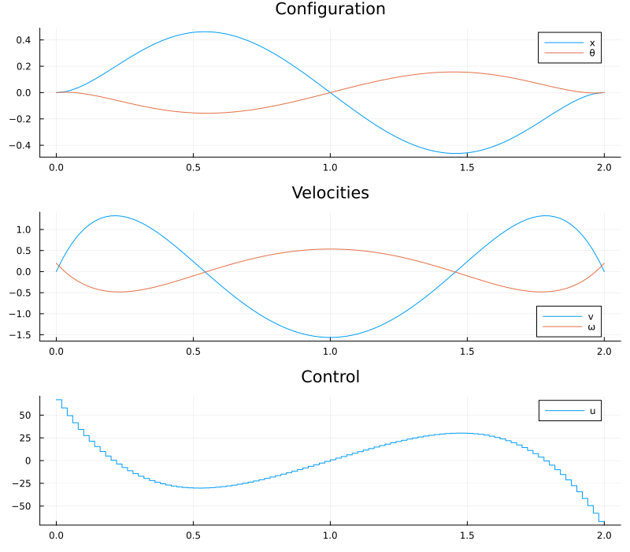

Cart-Pole Periodic Orbit via Symbolic Lagrangian Mechanics
This tutorial demonstrates how to combine symbolic derivation of equations of motion (via Symbolics.jl) with direct optimal control (via OptimalControl.jl) to find a periodic orbit for a cart-pole system.
The first step is to obtain an explicit state-space model
\[\dot X = f(X,u),\]
from the Lagrangian description of the system. This is done automatically using Symbolics.jl, avoiding manual derivations. We then formulate an optimal control problem: find a control input $u(t)$ such that the system returns to its initial state after a fixed time $t_f$ (periodicity constraint), while minimizing the quadratic cost
\[\int_0^{t_f} u(t)^2 \,\mathrm d t.\]
For reference, we first outline how the dynamics $f(X,u)$ can be derived by hand from the Euler–Lagrange equations. We then show how to obtain the same model automatically using Symbolics.jl. This second approach is the one used in practice in this tutorial, as it scales to more complex systems and avoids lengthy manual computations.
The Cart-Pole System
The system consists of a cart of mass $m_c$ sliding on a frictionless horizontal rail, with a rigid pendulum of mass $m_p$ and length $l$ attached to it. A horizontal force $u$ (the control input) acts on the cart.

The configuration vector is $q = (x,\, \theta)$, where $x$ is the cart position and $\theta = 0$ corresponds to the upright (unstable) equilibrium of the pendulum.
Positions
The Cartesian positions of the two bodies are:
\[p_c = \begin{pmatrix} x \\ 0 \end{pmatrix}, \qquad p_p = \begin{pmatrix} x + l\sin\theta \\ l\cos\theta \end{pmatrix}.\]
Lagrangian
The kinetic and potential energies are:
\[T = \tfrac{1}{2}m_c\,\|\dot{p}_c\|^2 + \tfrac{1}{2}m_p\,\|\dot{p}_p\|^2 = \tfrac{1}{2}(m_c+m_p)\dot{x}^2 + m_p l\,\dot{x}\dot{\theta}\cos\theta + \tfrac{1}{2}m_p l^2\dot{\theta}^2,\]
\[V = m_p\,g\,l\cos\theta.\]
The Lagrangian is $\mathcal{L} = T - V$. The virtual power $P_{nc}$ of the non-conservative force (control) $F = (u, 0)$ acting on the cart gives the generalised force vector:
\[P_{nc} = F \cdot \dot{p}_c = u\,\dot{x}, \quad\Longrightarrow\quad Q = \frac{\partial P_{nc}}{\partial \dot{q}} = \begin{pmatrix} u \\ 0 \end{pmatrix}.\]
Euler–Lagrange Equation
The equations of motion follow from:
\[\frac{d}{dt}\frac{\partial \mathcal{L}}{\partial \dot{q}} - \frac{\partial \mathcal{L}}{\partial q} = Q.\]
They can be written in the form (cf. the manipulator equations)
\[M(q)\,\ddot{q} + b(q, \dot q, u) = 0,\]
where $M$ is the (symmetric positive-definite) mass matrix :
\[M(q) = \begin{pmatrix} m_c + m_p & m_p l \cos\theta \\ m_p l \cos\theta & m_p l^2 \end{pmatrix},\]
and the $b$ the bias, which collects Coriolis/gravity terms and the control torque. Instead of deriving these by hand, we rely on Symbolics.jl to compute and analytically invert $M(q)$ for us to solve the equations of motion for $\ddot q$.
State-Space Form
Defining the state $X = (x,\,\theta,\,\dot{x},\,\dot{\theta})$, the equations of motion become the first-order system:
\[\dot{X}(t) = f\!\left(X(t),\, u(t)\right) = \begin{pmatrix} \dot{x} \\ \dot{\theta} \\ M^{-1}(q) \bigl(-b(q, \dot q, u)\bigr) \end{pmatrix}.\]
Optimal Control of a Cart-Pole System using Symbolics.jl
This tutorial demonstrates how to use Symbolics.jl to automate the derivation of equations of motion (EOM) for a mechanical system and subsequently solve an optimal control problem using OptimalControl.jl.
Implementation
Setup & Imports
using OptimalControl
using NLPModelsIpopt
using Symbolics
using LinearAlgebra: dot
using PlotsPhysical Parameters and Symbolic Variables
We declare all parameters both as numerical constants (for the final function evaluation) and as symbolic variables (for the Lagrangian computation). We define the configuration vector $q = (x, \theta)$.
# Physical constants
const m_c_val = 5.0
const m_p_val = 1.0
const l_val = 2.0
const g_val = 9.81
const tf_val = 2.0
# Symbolic variables
@variables t
D = Differential(t)
@variables m_c m_p l g u
@variables x(t) θ(t)
q = [x, θ]Automated Kinematics and Lagrangian
The primary advantage of this approach is that the user is solely required to define the fundamental physical quantities. Once the Cartesian positions and the applied forces are specified, the kinetic energy $T$, potential energy $V$, and non-conservative power $P_{nc}$ are formulated directly.
The necessary kinematic and dynamic definitions are:
\[\begin{align*} p_c &= (x,\,0) \\ p_p &= (x + l \sin\theta,\,l \cos\theta) \\ F &= (u,\,0) \\ \\ T &= \tfrac{1}{2}m_c\,\|\dot{p}_c\|^2 + \tfrac{1}{2}m_p\,\|\dot{p}_p\|^2 \\ V &= m_p\,g\,p_{p,y} \\ P_{nc} &= F \cdot \dot{p}_c \end{align*}\]
All subsequent heavy lifting, including the computation of the time velocities $\dot{p}_c$ and $\dot{p}_p$, is executed automatically.
p_c = [x, 0.0]
p_p =[x + l * sin(θ), l * cos(θ)]
F = [u, 0.0]
squared_norm(x) = sum(abs2, x)
T = 0.5 * m_c * squared_norm(D.(p_c)) + 0.5 * m_p * squared_norm(D.(p_p))
V = g * (m_p * p_p[2])
P_non_conservative = dot(F, D.(p_c))Euler–Lagrange Equations and Mass-Matrix Inversion
Starting from $\mathcal{L} = T - V$, Symbolics.jl computes the terms of the Euler–Lagrange equations. To isolate the accelerations, we substitute the symbolic time derivatives with algebraic variables. This allows us to identify the standard manipulator form components: the mass matrix is the Jacobian of the residual with respect to the accelerations $\ddot{q}$, and the bias vector contains the remaining terms.
L = T - V
dq = D.(q)
ddq = D.(dq)
A = D.(Symbolics.gradient(L, dq)) # d/dt(∂L/∂q̇)
B = Symbolics.gradient(L, q) # ∂L/∂q
Q = Symbolics.gradient(P_non_conservative, dq)
# Euler-Lagrange residual: d/dt(∂L/∂q̇) - ∂L/∂q - Q = 0
el_res = expand_derivatives.(A - B - Q)
# Identify mass matrix M and bias vector b such that M·ddq + b = 0
mass = Symbolics.jacobian(el_res, ddq)
bias = Symbolics.substitute.(el_res, (Dict(ddq .=> 0.0),))
# Solve for accelerations analytically: ddq = M⁻¹(-b)
ddq_solution = Symbolics.simplify_fractions.(mass \ (-bias))
# Fully explicit state derivative: Ẋ = [dq, accel]
X = [q; dq]
dX = [dq; ddq_solution]Code Generation
Symbolics.build_function compiles the symbolic expression dX into a native Julia function with arguments X, u, and parameter values. The force_SA=true flag generates a StaticArrays kernel, which avoids heap allocations inside the ODE right-hand side — crucial for solver performance because dimension is small. For larger problems ($X \in \mathrm{R}^n$, $n > 100$), we would use a mutating dynamics function instead, cf. Julia Performance Tips.
# out-of-place variant: (state, u, params) → SVector
cartpole_dynamics = build_function(dX, X, u, [m_c, m_p, l, g];
expression=Val{false}, force_SA=true)[1]
const p_vals = [m_c_val, m_p_val, l_val, g_val]
f(X, u) = cartpole_dynamics(X, u, p_vals) # Function used by OptimalControl.jlOptimal Control Problem Definition
We now formulate the optimal control problem using the @def macro from OptimalControl.jl. The initial state is not at rest because $ω(0) = 0.2$, while the boundary condition $X(0) - X(tf) = 0$ encodes the periodicity of the orbit.
@def cartpole begin
t ∈ [0, tf_val], time
X = (x, θ, v, ω) ∈ R⁴, state
u ∈ R, control
x(0) == 0
θ(0) == 0
v(0) == 0
ω(0) == 0.2
X(tf_val) - X(0) == [0, 0, 0, 0] # Periodic orbit, remove `- X(0)` for finishing at the equilibrium
Ẋ(t) == f(X(t), u(t))
∫(u(t)^2) → min
endAbstract definition:
t ∈ [0, tf_val], time
X = ((x, θ, v, ω) ∈ R⁴, state)
u ∈ R, control
x(0) == 0
θ(0) == 0
v(0) == 0
ω(0) == 0.2
X(tf_val) - X(0) == [0, 0, 0, 0]
Ẋ(t) == f(X(t), u(t))
∫(u(t) ^ 2) → min
The (autonomous) optimal control problem is of the form:
minimize J(X, u) = ∫ f⁰(X(t), u(t)) dt, over [0, 2.0]
subject to
Ẋ(t) = f(X(t), u(t)), t in [0, 2.0] a.e.,
ϕ₋ ≤ ϕ(X(0), X(2.0)) ≤ ϕ₊,
where X(t) = (x(t), θ(t), v(t), ω(t)) ∈ R⁴ and u(t) ∈ R.
Solving the NLP
The problem is transcribed into a nonlinear program using direct collocation on a uniform grid of 100 intervals, then handed to Ipopt via NLPModelsIpopt.jl. We provide a simple initial guess for the state and control trajectories. See the documentation for more information.
initial_guess = @init cartpole begin
X(t) := [0.0, 0.0, 0.0, 0.2]
u(t) := 0.0
end
sol = solve(cartpole; display=false, grid_size=100, init=initial_guess)• Solver:
✓ Successful : true
│ Status : first_order
│ Message : Ipopt/generic
│ Iterations : 3
│ Objective : 1319.7901091697759
└─ Constraints violation : 6.676326158583379e-13
• Boundary duals: [1.8282403026635253e-13, -2.6320013399637676e-12, -4990.076339128375, -12844.887616517444, 2495.038169564188, 14667.42562953156, -2495.0381695641872, -6422.443808258721]
Results
tsol = time_grid(sol)
Xsol = state(sol).(tsol)
usol = control(sol).(tsol)
X_mat = reduce(hcat, Xsol)
q_sol = X_mat[1:2, :]'
dq_sol = X_mat[3:4, :]'
p1 = plot(tsol, q_sol, label=["x" "θ"], title="Configuration")
p2 = plot(tsol, dq_sol, label=["v" "ω"], title="Velocities")
p3 = plot(tsol, usol, label="u", title="Control", linetype=:steppost)
plot(p1, p2, p3, layout=(3, 1), size=(800, 700))
The plots show the cart position $x$ and pendulum angle $\theta$, the corresponding velocities, and the optimal control force $u$ required to stabilize the system back to its initial state within 2 seconds.
Animation
The animation below shows the cart-pole evolving along the optimal periodic trajectory. The blue cart slides on the horizontal rail while the pendulum swings around the upright equilibrium.